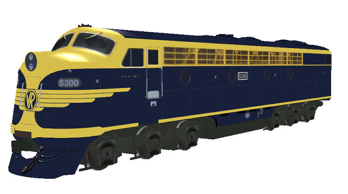

S Class Diesel Locomotive (VIC)
original 3d model design and textures by James Brook
Overview
Five Packages contain:
- As delivered - S300 "Matthew Flinders" in blue and gold Victorian Railways livery;
- Modernised - S302 in blue and gold Victorian Railways livery, S313 in orange and grey V/Line livery;
- Modernised - S307 in orange and grey V/Line livery fitted with with Leslie Supertyphon horns;
- Modernised - S301 renumbered by Zec Murphy in blue and gold Victorian Railways livery;
- Modernised - S315 and S317 renumbered by Richard Lauder in blue and gold Victorian Railways livery;
- Modernised - S317 retextured into GNRS livery - visit the GNRS Bulldogs page for more information.
| These locomotives have been designed for use with the LightFx lighting enhancement. The installer will install this enhancement for you. Click on this image for more details. |  |
